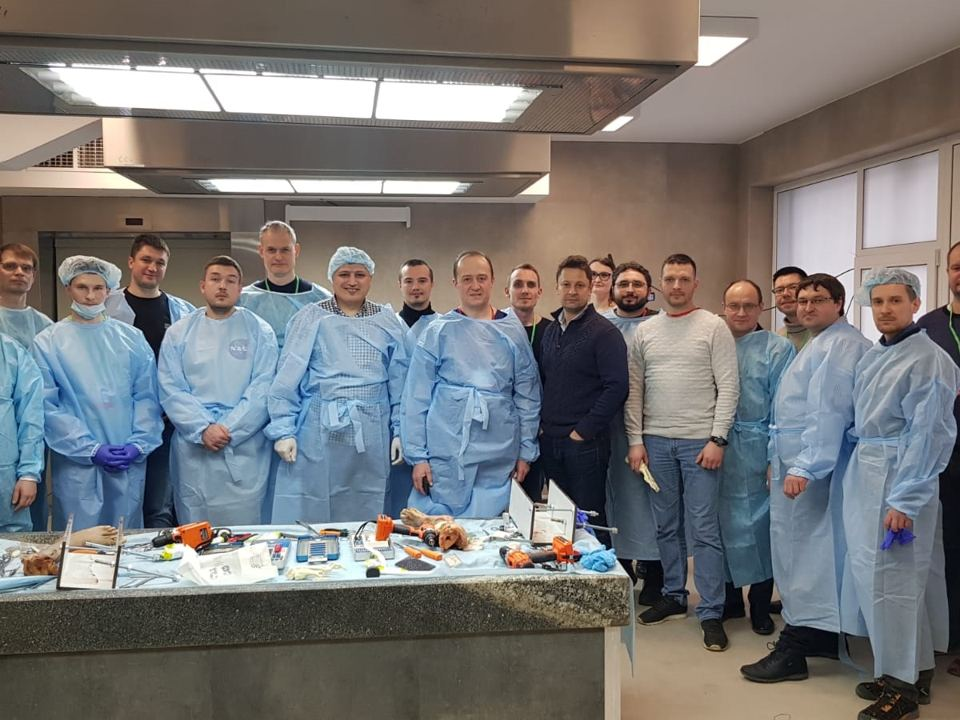
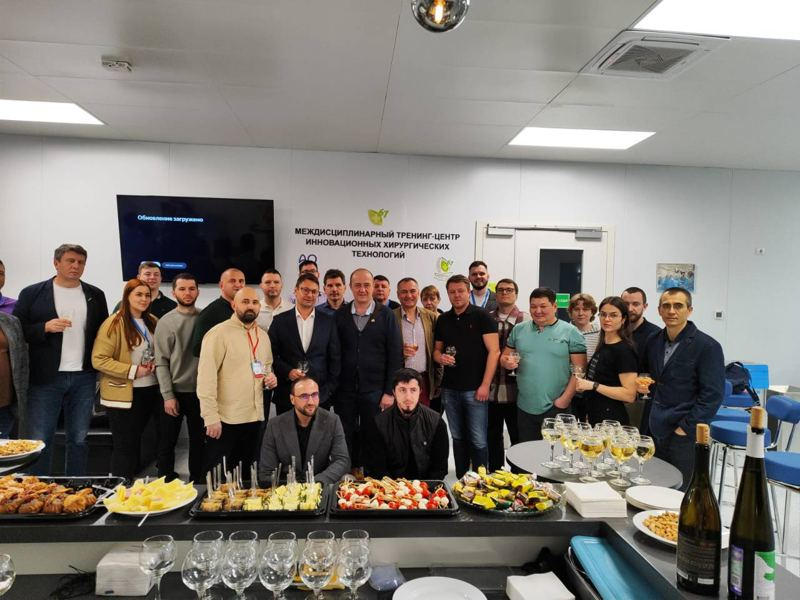
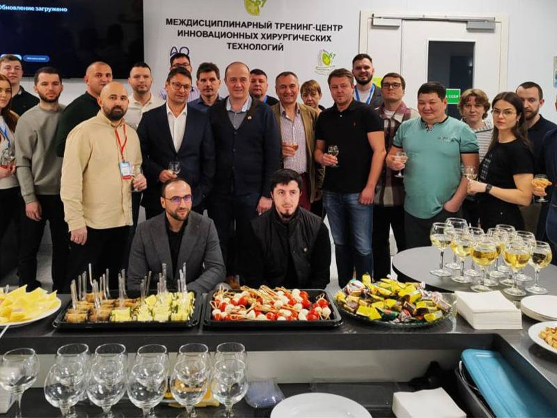
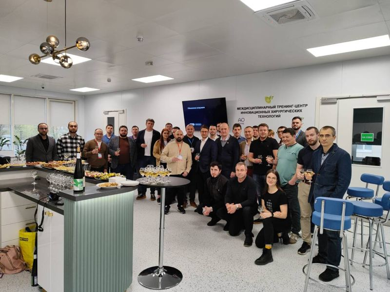
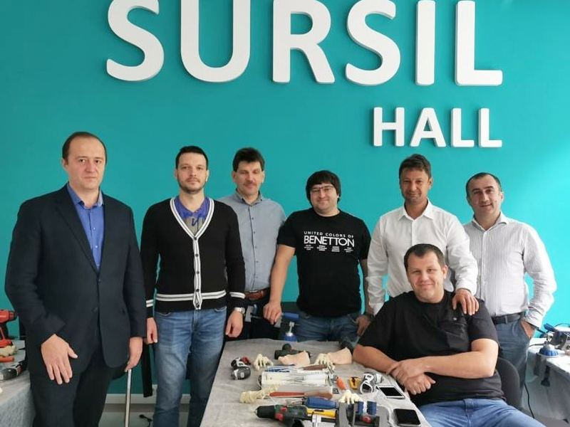
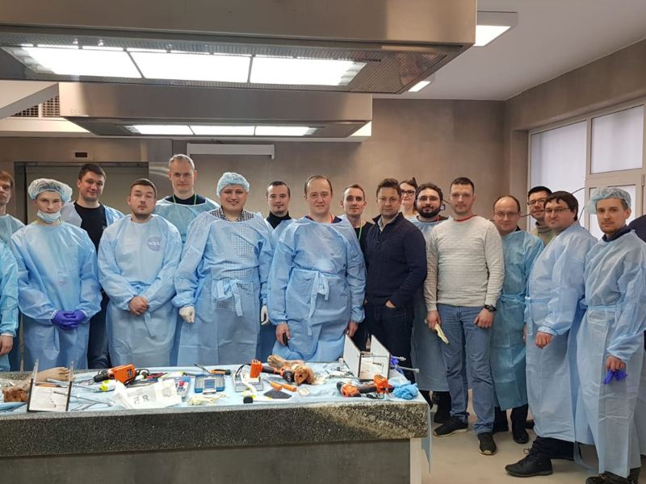
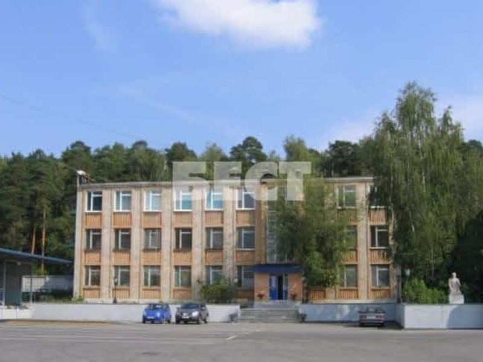

Институт / Курсы / Запуск курсов / Продвинутый курс
Продвинутый курс · 23–24 октября 2026
Продвинутый курс · тренинг-центр ГКБ № 67 · 16 ак. ч. · руководитель Качесов А. В.
- 18заявок
- 18оплачено
- 18 из 18документы приняты
- 17 из 18посетили оба дня
- 17аттестованыпротокол на подписи
- 17удостоверенияномера присвоены
- —ФИС ФРДО15 готовы
Курсанты запуска · посещение и итоговая аттестация
Документы у всех 18 приняты до курса. Отметки идут в ведомость и протокол; пропущен день — «не допущен», удостоверения нет. Сертификат — всем; удостоверение — при принятых СНИЛС и дипломе (у Иванова и Ершовой документы на исправлении — номер закреплён, выдадим позже).
| № | Курсант | Плательщик | День 1 23.10 | День 2 24.10 | Аттестация | Удостоверение | Выдаём |
|---|---|---|---|---|---|---|---|
| 1 | сам · оферта | зачёт | № 000000000107 | сертификат + удостоверение | |||
| 2 | Белов Глеб Романович | сам · оферта | зачёт | № 000000000108 | сертификат + удостоверение | ||
| 3 | Гусева Вера Олеговна | групповой · ГКБ № 1 | зачёт | № 000000000109 | сертификат + удостоверение | ||
| 4 | Давыдов Максим Петрович | сам · оферта | зачёт | № 000000000110 | сертификат + удостоверение | ||
| 5 | Ершова Алина Игоревна | сам · оферта | зачёт | № 000000000111 | сертификат · удостоверение — после документов | ||
| 6 | сам · оферта | зачёт | № 000000000123 | сертификат · удостоверение — после документов | |||
| 7 | Калинин Степан Ильич | групповой · ГКБ № 1 | зачёт | № 000000000113 | сертификат + удостоверение | ||
| 8 | сам · оферта | зачёт | № 000000000112 | сертификат + удостоверение | |||
| 9 | Ларионов Тимур Ренатович | сам · оферта | зачёт | № 000000000114 | сертификат + удостоверение | ||
| 10 | сам · оферта | не допущен — пропущен день 2 | — | сертификат | |||
| 11 | Носков Ярослав Денисович | сам · оферта | зачёт | № 000000000115 | сертификат + удостоверение | ||
| 12 | Осипова Полина Андреевна | сам · оферта | зачёт | № 000000000116 | сертификат + удостоверение | ||
| 13 | Панов Виктор Семёнович | сам · оферта | зачёт | № 000000000117 | сертификат + удостоверение | ||
| 14 | Рябов Илья Константинович | сам · оферта | зачёт | № 000000000118 | сертификат + удостоверение | ||
| 15 | Савина Юлия Михайловна | сам · оферта | зачёт | № 000000000119 | сертификат + удостоверение | ||
| 16 | Тихонов Арсений Львович | сам · оферта | зачёт | № 000000000120 | сертификат + удостоверение | ||
| 17 | Фёдоров Михаил Аркадьевич | сам · оферта | зачёт | № 000000000121 | сертификат + удостоверение | ||
| 18 | Шубина Ксения Вадимовна | сам · оферта | зачёт | № 000000000122 | сертификат + удостоверение |
Документооборот запуска
По порядку: следующий шаг открывается, когда подписан предыдущий. Последний шаг — ФИС ФРДО.
- 1Договоры — двусторонние: с плательщиком; слушатели — приложением
Шаблон:
contract.docxМетки, которые панель подставляет:
· версия 3 от 01.09.2026
✓ подписан ЭЦП20.10.2026 - 2Приказ о зачислении — на 18 курсантов
Шаблон:
order-enroll.docxМетки, которые панель подставляет:
· версия 3 от 01.09.2026
✓ подписан ЭЦП22.10.2026 - 3Ведомость посещения — из отметок на вкладке «Курсанты»
Шаблон:
attendance.docxМетки, которые панель подставляет:
· версия 3 от 01.09.2026
✓ подписан ЭЦП24.10.2026 - 4Протокол итоговой аттестации — зачёт / не допущен — из вкладки «Курсанты»
Шаблон:
protocol.docxМетки, которые панель подставляет:
· версия 3 от 01.09.2026
◐ на подписиотправлен на подпись 18.11.2026 - 5Приказ об отчислении в связи с окончанием обучения — и о выдаче удостоверений
Шаблон:
order-finish.docxМетки, которые панель подставляет:
· версия 3 от 01.09.2026
ждёт предыдущего шагапосле подписи протокола - 6Сертификаты участника — всем 18 — документы не нужны
Шаблон:
certificate-part.docxМетки, которые панель подставляет:
· версия 3 от 01.09.2026
ждёт предыдущего шагапосле приказа - 7Удостоверения о повышении квалификации — только при принятых СНИЛС и дипломе; номера 000000000107–123, печать на бланках
Шаблон:
certificate.docxМетки, которые панель подставляет:
· версия 3 от 01.09.2026
ждёт предыдущего шаганомера присвоены 24.10.2026; печать — после приказа - 8Сканы удостоверений в кабинеты курсантов — после подписи и печатиждёт предыдущего шагапосле приказа
- 9Сведения в ФИС ФРДО — ниже — проверка полей и сборка файлаждёт предыдущего шагаможно проверять уже сейчас
ФИС ФРДО
Перед сборкой панель проверяет у каждого все поля, которые требует ФИС ФРДО (сверить с приказом Рособрнадзора № 831 и шаблоном загрузки).
- 1Проверка полей15 готовы, 2 нет
- 2Собрать файлпо шаблону ФИС ФРДО
- 3Отправленосотрудник загружает сам
- 4Результатпринято → запуск уходит в «Завершённые»
| Курсант | Проверка полей | Действия |
|---|---|---|
| № 000000000107 | ✓ все поля заполнены | |
Белов Глеб Романович № 000000000108 | ✓ все поля заполнены | |
Гусева Вера Олеговна № 000000000109 | ✓ все поля заполнены | |
Давыдов Максим Петрович № 000000000110 | ✓ все поля заполнены | |
Ершова Алина Игоревна № 000000000111 | ✕ исправить: СНИЛС не прошёл проверку контрольного числа — опечатка в номере | |
| № 000000000123 | ✕ исправить: серия и номер диплома — документ на исправлении (учебная часть вернула 17.11) | |
Калинин Степан Ильич № 000000000113 | ✓ все поля заполнены | |
| № 000000000112 | ✓ все поля заполнены | |
Ларионов Тимур Ренатович № 000000000114 | ✓ все поля заполнены | |
Носков Ярослав Денисович № 000000000115 | ✓ все поля заполнены | |
Осипова Полина Андреевна № 000000000116 | ✓ все поля заполнены | |
Панов Виктор Семёнович № 000000000117 | ✓ все поля заполнены | |
Рябов Илья Константинович № 000000000118 | ✓ все поля заполнены | |
Савина Юлия Михайловна № 000000000119 | ✓ все поля заполнены | |
Тихонов Арсений Львович № 000000000120 | ✓ все поля заполнены | |
Фёдоров Михаил Аркадьевич № 000000000121 | ✓ все поля заполнены | |
Шубина Ксения Вадимовна № 000000000122 | ✓ все поля заполнены |
Фото с курса
Менеджер загрузил фото в Selectel — панель видит папку сама. Выберите обложку, скройте лишнее и опубликуйте.
courses/2026-10-23-advanced/photos/48 фото (пример) · загружены 25.10 · уменьшенные копии для сайтов готовы







Показаны 8 из 48.